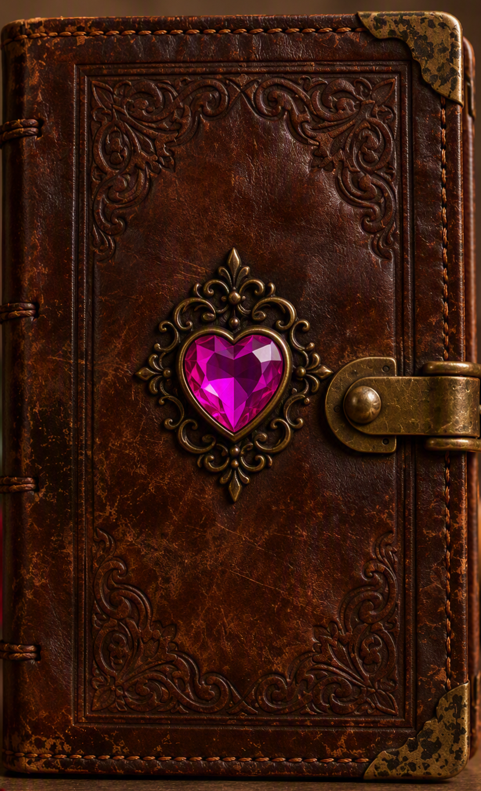
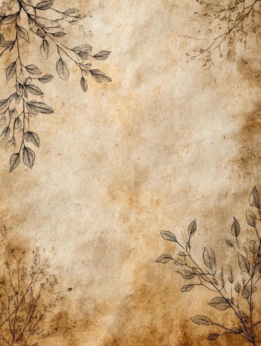
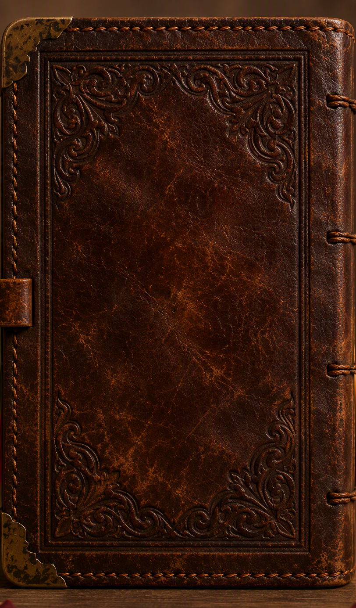

Hola aquí estoy de nuevo, escribiendo con mi mano lo que dicta mi corazón.
Ta chida la pagina no? jaja.
Habiendo escrito todo lo siguiente en mi cuaderno. Quiero ser sincero de nuevo, no escribo esto solo para que lo lea, la verdad es que en el fondo busco una respuesta.
No quiero incomodarla, ni mucho menos que se sienta presionada, solo quiero que sepa lo que siento y que no me importa si no es correspondido.
No quiero que se sienta mal, ni que se confunda. Voy a intentar ser lo más claro posible, y si no es correspondido, no pasa nada, seguiré siendo su amigo y la respetaré como siempre.
Creo que mi secreto mejor y peor guardado es lo mucho que la quiero. El peor porque no me freno en expresarselo, y aunque a veces me lo guardo, siempre llega el impulso de querer hacerlo. La quiero... y de una manera en la que nunca me hubiera imaginado.
Y es el mejor guardado porque sé que de mi circulo, muy pocos lo saben, pero sé que desconocen de esto, las paginas, canciones, reels y tiktoks. Jaja, nunca le conte a nadie nada, porque no quería ni quiero que la molesten, porque no quiero que la incomoden.
No sé como se sienta con esto, pero de ante mano quiero que se relaje, no busco ni quiero que esto afecte de forma negativa nuestra amistad. Porque quiero... de cierta manera jurar, que siempre voy a buscar la manera de apoyarla, no solo en lo que necesite, sino que para lo que quiera.
Tal vez lo vea cursi o muy aferrado, pero... Yo no me quiero ir. Almenos no de la nada... No hasta que usted ya no me quiera.
Tal vez repita mucho esto, no lo sé, escribo esto tal cual sale de mi mente, pero quiero hacer un gran enfasís en esto "no se preocupe" y lo digo de forma genera, no se preocupe, por lo que está pasando, no se preocupe por un examen, no se preocupe en pensar sus palabras, si responde a esta "carta", aunque el diseño que le coloqué al final fue el de un diario.
Porque parte de mi idea de hacer estas páginas, fue el no molestarla, que no generara ningún conflicto, con cualquier persona, aunque tampoco niego que me ayuda, porque hasta eso, ahorita no tengo una forma "sencilla" de entregarle algo físico.
Y aunque no lo crea, me ayuda a desahogarme, porque no sé si lo sabe, pero me cuesta mucho expresarme, y más cuando se trata de usted.
Tampoco es misterio lo poco que me gusta el HTML, peor CSS, me gusta pensar que a usted le gusta ver el resultado.
Jaja leyendo las 3 páginas me doy cuenta que no rima, pero está bien, ese no es el objetivo.
Sabe me siento rarito, nunca me habia imaginado haciendo esto... y puede que si lo sea, al final tampoco se nada de esto, no sé cuantas veces me equivoqué intentando hacer algo. Viendo los mensajes que le mando parezco un simp XD.
Si hoy le hablara a mi yo del año pasado, nunca se hubiera imaginado estarle hablando por otra cosa que no fuera el colegio. Y si le soy completamente sincero, nunca hubiera hecho nada de esto, si la Elsa no me hubiera presionado para que lo hiciera, y ahora me alegro de que lo haya hecho.
Ahora en retrospectiva, me da nostalgia como me animaba, la verdad es que no me queria animar y tuve casi una semana en repeat la canción "Me gustas" de TIMØ, creo que esa canción es mi mejor representación de como evité y me animé a mandarle aquel reel que repostié.
Que la verdad todavia no me acuerdo por qué lo hice, no tenía intención repostiarlo. Pero fue la Elsa la que me dijo que le enviara eso (porque vio que el repost).
Me acuerdo del gran sermón que me dió la Elsa, de que si no me animaba nunca iba a saber si era reciproco.
Y ahora seis meses después... aun no sé si lo es.
Intenté abandonar el sentimiento, no lo niego. Fue por eso que le dije que ya no le iba a mandar ese tipo de reels en instagram, pero no puedo y tampoco quiero dejar de hacerlo... porque me hace feliz, al final sigo con esto.
Creo que me lastimé más yo solo pensando y pensando, y la verdad no sé como terminé hasta llorando unas veces, "Creep" de Radiohead me pega en el corazón.
Al final ya no me importaba si respondía o no, solo quería expresarme, y que lo viera.
No sé cual sea su pensar sbre mí, porque sé que me he comportado muy diferente a un amigo, y de ya... le pido perdón si eso la incomoda, con usted no mido mis acciones, y sé que muchas veces soy muy precipidado con lo que hago.
Ya hace un tiempo que no sobrepienso lo que hago, y simplemente le envío lo que siento, jaja... comparado con el primer reel que hasta temblando estaba después de que se lo envié.
Puedo decir con total seguridad que este año fue mi mejor año, no por mis notas, llevo años evitando el cuadro de honor, y no es que no me guste, solo no me gustó la presión que me generaban mis papás... Pero eso es tema aparte.
Me encantó poder convivir con usted, cada que la veía reír era lo mejor de mi día, y la verdad hubiera querido salir más con usted. Con el grupo de migajeros XD.
Siempre que oro le agradezco a Dios por ustedes tres, y por la bella experiencia de estudiar con ustedes, en un colegio el cual no estaba en mi lista, más sin pensarlo mucho me quedé ahi.
Enserio que usted, la Elsa y el Vini le han regalado muchisima felicidad a mi corazón. Y quiero coonfiar plenamente en que nos podemos volver a reunir.
Creo que ya me extendí demaciado, esto lo estoy escribiendo directamente en el HTML, y tengo otro texto en mi agenda en el cual no tengo escrito todo esto pero, es la guia que escribí para poder escribir esto.
No le estoy poniendo pluma, solo escribo lo que siento, directamente de mi corazón, sin rebuscar palabras, es como si se lo dijera en persona.
Al principio habia pensado en escribir otro poema, pero siento que me enredo mucho con ellos. Y aunque me gusta escribirlos, si viera mi agenda tengo muchos escritos, y pocos se los he mostrado.
Pero hoy quiero ser más directo, de cierta forma que me caracteríza, y que la Elsa me dijo que no hiciera al principio.
Pero quiero volver a aclarar... no se preocupe por lo que piense que pueda causar su respuesta, tampoco le pido que me conteste rápido, relajese, calmese y considerelo como quiera, solo le pido que diga lo que piensa, la verdad, sin pensar que eso pueda lastimarme.
¿Si? ¿No?
No piense en el peso de esas palabras, como dije. No pienso dejarle de hablar de la nada, ni mucho menos dejar de ser su amigo. Porque yo no quiero ser como aquellos que se han apartado de mi vida.
Se que no me conoce, la verdad es que ni al Vini le he contado del todo mi situación, y aunque es cierto que la situación de ambos es muy diferente a la mía, creo que ustedes son más abiertos para contarlo.
Jaja... De nuevo me he enredado bastante, gracias por ya haber leido hasta acá, se que es bastante texto, y que hasta ahora no he dicho mayor cosa. Pero ahi va... Solo un ultimo pensamiento.
Pfff... Weeeno, no sé muy bien como decir estas cosas, nunca he sido bueno hablando de sentimientos, pero desde que llegó a mi vida hay momentos que se sienten diferentes, me gusta su forma de ser, hasta esas pequeñas cosas que tal vez y no nota, me gusta su risa, sus ocurrencias,
cuando se ponía seria o hasta cuando no sabía que decir... estoy aprendiendo a querer, y creo que amar a alguien es también aprender a querer cada parte de esa persona, sin pedirle que sea perfecta, y si algún día las cosas se ponen difíciles quiero que recuerde algo...
No tiene que ser perfecta para que alguen la quiera, todos tenemos días malos, cometemos errores y nos equivocamos, pero eso no significa que dejemos de merecer cariño.
Para mí siempre será alguien muy especial, no sé que nos espera más adelante... pero si pudiera elegir, me gustaría seguir compartiendo momentos con usted. Reir por cualquier cosa, apoyarnos cuando algo salga mal y crear recuerdos que algún día podamos mirar y decir:
-Que bonito fue vivir todo esto.
Porque sinceramente me alegra mucho haberla conocido.
Nany... No sé si leyó esto completo.
Tal vez ya se imaginó el motivo de todo esto, creo que es obvio. La amo y no lo escondo.
Deseo con todo mi ser que me diera el privilegio de salir con usted, de poder ser su novio, de apoyarla en todo lo que desee. Incluso ahora se me acelera el pulso a pesar de que es la segunda vez que lo escribo, si viera mi cuaderno. Se nota como se acelera hasta mi mano escribiendo.
Se que escrito no es la forma de pedirselo, lo quiero hacer en persona, con mi voz, con mi aliento... Pero ahora se me dificulta, y quería decirle algo el ultimo jueves, pero me ganó el tiempo, ya no la ví, tampoco me despedí, y ahora me pesa no haber ganado ese examen, porque por eso pude quedarme, tener más tiempo, para poder verla... un poco más.
Deme una oportunidad... Se que tal vez ya insistí demaciado (algo se me pegó de ustedes jaja xd). Tampoco sé como se encuentre usted ahora, tal vez me pegó muy rápido la wite, con el mensaje con el que me respondió el doc de Word que hice, pero enserio quiero intentarlo.
Porque digame:
-Solo que yo no quiero hacerle daño.-
No se preocupe por eso, la vida no es vida sin heridas, enserio quiero intentarlo, quiero amarla con todo mi ser, porque la vida no es solo felicidad, siempre van a haber altibajos.
Vealo como algo positivo. Voy con todo, haga conmigo lo que quiera, porque todos los días... Le ruego a Dios que fortalezca mi corazón. Porque quiero ser mejor persona, no solo con los demás. Quiero ser la mejor persona para usted.
Deverdad... no se preocupe por eso, crea en que si es la voluntad de Dios. El siempre sanará las heridas, y nos unirá aún más que antes.
-Yo no soy lo mejor ni nada wow.-
JAJAJA, yo la quiero a usted. Para mí, Adlai Naomi Pacheco Girón es lo mejor que ha llegado a mi vida.
¿Nada wow?
Tal vez no lo he expresado bien, pero usted es hermosa, bella, primorosa, encantadora, guapa. Me encanta, estoy loco por usted.
Y si aún así no queda claro, si todavía piensa que hay alguien "mejor". Pues no quiero a alguien "mejor" yo la quiero a usted, así tal cual y como es, porque esa es la persona de la que yo me enamoré. Tal vez haya cosas que mejorar, nadie es perfecto, yo también estoy aprendiendo.
Pero creame que lo más wow que he visto llegar a mi vida fue usted. Y no dude que es cierto.
Decir que el remake de TLOZ OOT es lo que más he esperado este año es mentira, porque desde la primera página que hice, le he rogado a Dios por que me corresponda.
No sé como haya entendido todo esto, espero no confundirla más...
Pero si no siente lo mismo tranquila... digamelo, y tampoco se sienta obligada a contestar lo más rapido que pueda, tomese todo el tiempo que necesite.
Yo la sigo esperando... aquí sentadito, desde la primera página.
